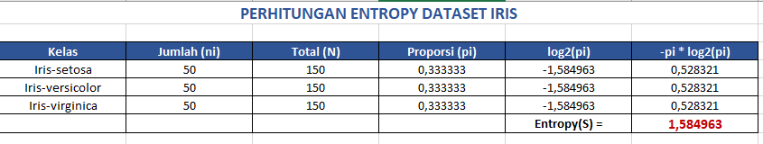
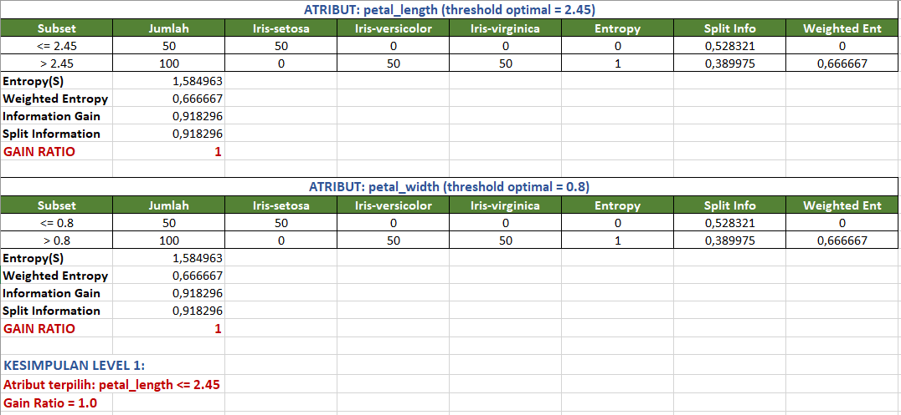
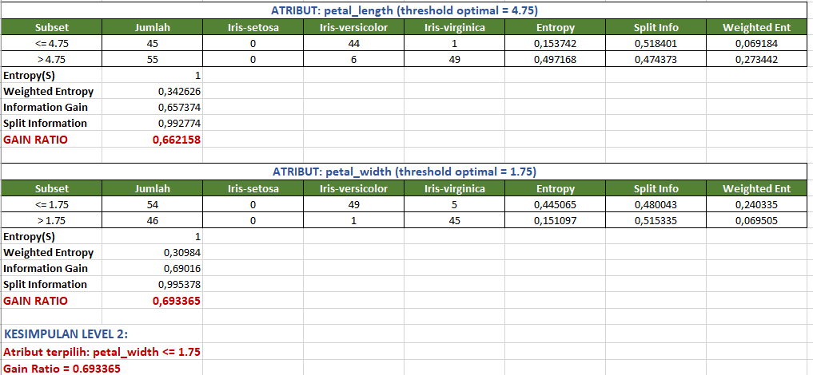
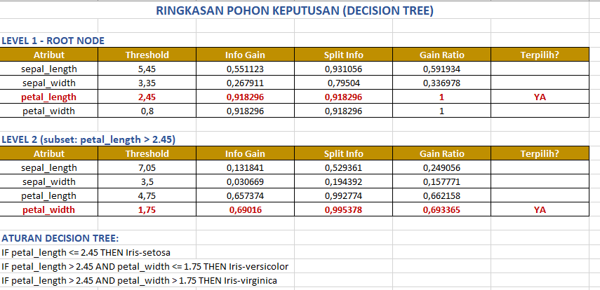
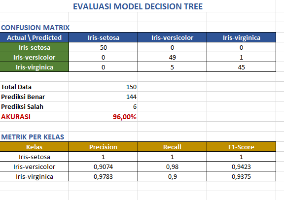
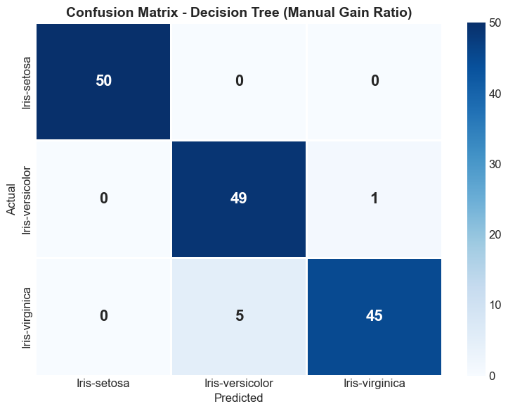
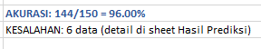
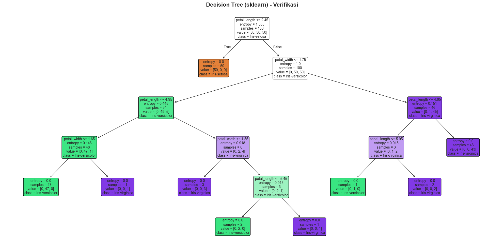

Decision Tree Classifier - Analisis Dataset IRIS#
Menggunakan Gain Ratio (KNIME Decision Tree Learner)#
1. Konsep Dasar Pohon Keputusan (Decision Tree)#
Decision Tree adalah model klasifikasi berbentuk struktur pohon yang membagi data secara rekursif berdasarkan atribut yang paling informatif.
Komponen |
Penjelasan |
|---|---|
Root Node |
Node awal, atribut dengan Gain Ratio tertinggi |
Internal Node |
Node percabangan berdasarkan kondisi atribut |
Branch |
Cabang yang menghubungkan node |
Leaf Node |
Node akhir berisi label kelas |
Algoritma Membangun Decision Tree (Gain Ratio):#
Hitung Entropy dataset
Untuk setiap atribut, cari threshold optimal (evaluasi semua kemungkinan split)
Hitung Information Gain, Split Information, dan Gain Ratio
Pilih atribut + threshold dengan Gain Ratio tertinggi sebagai node
Ulangi rekursif untuk setiap cabang hingga semua data terklasifikasi
2. Rumus-Rumus Penting#
2.1 Entropy (mengukur ketidakmurnian)#
2.2 Information Gain (mengukur kualitas split)#
2.3 Split Information (normalisasi)#
2.4 Gain Ratio#
Mengapa Gain Ratio? Information Gain bias terhadap atribut banyak nilai unik. Gain Ratio menormalisasi dengan Split Information. KNIME Decision Tree Learner menggunakan Gain Ratio sebagai default.
3. Import Library & Load Data#
import pandas as pd, numpy as np, matplotlib.pyplot as plt, seaborn as sns, math, warnings
from sklearn.tree import DecisionTreeClassifier, plot_tree, export_text
from sklearn.metrics import classification_report, confusion_matrix, accuracy_score
warnings.filterwarnings('ignore')
try: plt.style.use('seaborn-v0_8-whitegrid')
except:
try: plt.style.use('seaborn-whitegrid')
except: pass
plt.rcParams['figure.figsize'] = (10, 6)
plt.rcParams['font.size'] = 12
print("Library berhasil di-import!")
Library berhasil di-import!
df = pd.read_csv('data/IRIS.csv')
print(f"Dataset: {df.shape[0]} baris x {df.shape[1]} kolom")
print(f"\nDistribusi kelas:\n{df['species'].value_counts()}")
df.head()
Dataset: 150 baris x 5 kolom
Distribusi kelas:
species
Iris-setosa 50
Iris-versicolor 50
Iris-virginica 50
Name: count, dtype: int64
| sepal_length | sepal_width | petal_length | petal_width | species | |
|---|---|---|---|---|---|
| 0 | 5.1 | 3.5 | 1.4 | 0.2 | Iris-setosa |
| 1 | 4.9 | 3.0 | 1.4 | 0.2 | Iris-setosa |
| 2 | 4.7 | 3.2 | 1.3 | 0.2 | Iris-setosa |
| 3 | 4.6 | 3.1 | 1.5 | 0.2 | Iris-setosa |
| 4 | 5.0 | 3.6 | 1.4 | 0.2 | Iris-setosa |
Visualisasi Data#
fig, axes = plt.subplots(2, 2, figsize=(14, 10))
features = ['sepal_length', 'sepal_width', 'petal_length', 'petal_width']
colors = {'Iris-setosa': '#e74c3c', 'Iris-versicolor': '#2ecc71', 'Iris-virginica': '#3498db'}
for i, feat in enumerate(features):
ax = axes[i//2][i%2]
for sp in df['species'].unique():
ax.hist(df[df['species']==sp][feat], alpha=0.6, label=sp, color=colors[sp], bins=15)
ax.set_title(f'Distribusi {feat}', fontweight='bold'); ax.legend(fontsize=8)
plt.suptitle('Distribusi Fitur Dataset IRIS', fontsize=16, fontweight='bold')
plt.tight_layout(); plt.show()

4. Perhitungan Entropy Dataset#
Hasil Excel: Entropy Dataset#

total = len(df)
species_counts = df['species'].value_counts()
print("="*60)
print("PERHITUNGAN ENTROPY DATASET (Manual Python)")
print("="*60)
entropy_total = 0
rows = []
for cls in sorted(species_counts.index):
ni = species_counts[cls]; pi = ni/total; lp = math.log2(pi); co = -pi*lp; entropy_total += co
rows.append({'Kelas': cls, 'ni': ni, 'N': total, 'pi': round(pi,6), 'log2(pi)': round(lp,6), '-pi*log2(pi)': round(co,6)})
print(f" {cls}: ni={ni}, pi={pi:.6f}, log2(pi)={lp:.6f}, -pi*log2(pi)={co:.6f}")
print(f"\n>>> ENTROPY(S) = {entropy_total:.6f}")
pd.DataFrame(rows)
============================================================
PERHITUNGAN ENTROPY DATASET (Manual Python)
============================================================
Iris-setosa: ni=50, pi=0.333333, log2(pi)=-1.584963, -pi*log2(pi)=0.528321
Iris-versicolor: ni=50, pi=0.333333, log2(pi)=-1.584963, -pi*log2(pi)=0.528321
Iris-virginica: ni=50, pi=0.333333, log2(pi)=-1.584963, -pi*log2(pi)=0.528321
>>> ENTROPY(S) = 1.584963
| Kelas | ni | N | pi | log2(pi) | -pi*log2(pi) | |
|---|---|---|---|---|---|---|
| 0 | Iris-setosa | 50 | 150 | 0.333333 | -1.584963 | 0.528321 |
| 1 | Iris-versicolor | 50 | 150 | 0.333333 | -1.584963 | 0.528321 |
| 2 | Iris-virginica | 50 | 150 | 0.333333 | -1.584963 | 0.528321 |
5. Gain Ratio - Level 1 (Root Node)#
Evaluasi semua kemungkinan threshold untuk setiap atribut, pilih yang Gain Ratio tertinggi.
Hasil Excel: Gain Ratio Level 1#

def calc_entropy(labels):
t = len(labels)
if t == 0: return 0
return sum(-c/t * math.log2(c/t) for c in labels.value_counts() if c > 0)
def find_best_split(data, target='species'):
n = len(data); et = calc_entropy(data[target])
all_results = []
for feat in features:
vals = sorted(data[feat].unique())
best_gr = -1; best_res = None
for i in range(len(vals)-1):
th = round((vals[i]+vals[i+1])/2, 2)
left = data[data[feat]<=th]; right = data[data[feat]>th]
nl = len(left); nr = len(right)
el = calc_entropy(left[target]); er = calc_entropy(right[target])
we = (nl/n)*el + (nr/n)*er; ig = et - we
si = sum(-(ni/n)*math.log2(ni/n) for ni in [nl,nr] if ni>0)
gr = ig/si if si>0 else 0
if gr > best_gr:
best_gr = gr
best_res = {'Atribut':feat, 'Threshold':th, 'N_Left':nl, 'N_Right':nr,
'Entropy_Left':round(el,6), 'Entropy_Right':round(er,6),
'Info_Gain':round(ig,6), 'Split_Info':round(si,6), 'Gain_Ratio':round(gr,6)}
all_results.append(best_res)
best = max(all_results, key=lambda x: x['Gain_Ratio'])
return best, all_results
best1, all_level1 = find_best_split(df)
print("="*70)
print("GAIN RATIO LEVEL 1 - ROOT NODE (150 data)")
print("="*70)
for r in all_level1:
marker = " <<< TERPILIH" if r['Atribut']==best1['Atribut'] else ""
print(f" {r['Atribut']:15s} th={r['Threshold']:5.2f} | IG={r['Info_Gain']:.6f} SI={r['Split_Info']:.6f} GR={r['Gain_Ratio']:.6f}{marker}")
print(f"\n>>> ROOT NODE: {best1['Atribut']} <= {best1['Threshold']} (Gain Ratio = {best1['Gain_Ratio']:.6f})")
df_level1 = pd.DataFrame(all_level1)
df_level1
======================================================================
GAIN RATIO LEVEL 1 - ROOT NODE (150 data)
======================================================================
sepal_length th= 5.45 | IG=0.551123 SI=0.931056 GR=0.591934
sepal_width th= 3.35 | IG=0.267911 SI=0.795040 GR=0.336978
petal_length th= 2.45 | IG=0.918296 SI=0.918296 GR=1.000000 <<< TERPILIH
petal_width th= 0.80 | IG=0.918296 SI=0.918296 GR=1.000000
>>> ROOT NODE: petal_length <= 2.45 (Gain Ratio = 1.000000)
| Atribut | Threshold | N_Left | N_Right | Entropy_Left | Entropy_Right | Info_Gain | Split_Info | Gain_Ratio | |
|---|---|---|---|---|---|---|---|---|---|
| 0 | sepal_length | 5.45 | 52 | 98 | 0.64961 | 1.237716 | 0.551123 | 0.931056 | 0.591934 |
| 1 | sepal_width | 3.35 | 114 | 36 | 1.49348 | 0.758359 | 0.267911 | 0.795040 | 0.336978 |
| 2 | petal_length | 2.45 | 50 | 100 | 0.00000 | 1.000000 | 0.918296 | 0.918296 | 1.000000 |
| 3 | petal_width | 0.80 | 50 | 100 | 0.00000 | 1.000000 | 0.918296 | 0.918296 | 1.000000 |
6. Gain Ratio - Level 2#
Hasil Excel: Gain Ratio Level 2#

right_branch = df[df[best1['Atribut']] > best1['Threshold']]
print(f"Subset Level 2: {len(right_branch)} data ({best1['Atribut']} > {best1['Threshold']})")
print(f"Distribusi:\n{right_branch['species'].value_counts()}\n")
best2, all_level2 = find_best_split(right_branch)
print("="*70)
print(f"GAIN RATIO LEVEL 2 ({len(right_branch)} data)")
print("="*70)
for r in all_level2:
marker = " <<< TERPILIH" if r['Atribut']==best2['Atribut'] else ""
print(f" {r['Atribut']:15s} th={r['Threshold']:5.2f} | IG={r['Info_Gain']:.6f} SI={r['Split_Info']:.6f} GR={r['Gain_Ratio']:.6f}{marker}")
print(f"\n>>> LEVEL 2: {best2['Atribut']} <= {best2['Threshold']} (Gain Ratio = {best2['Gain_Ratio']:.6f})")
df_level2 = pd.DataFrame(all_level2)
df_level2
Subset Level 2: 100 data (petal_length > 2.45)
Distribusi:
species
Iris-versicolor 50
Iris-virginica 50
Name: count, dtype: int64
======================================================================
GAIN RATIO LEVEL 2 (100 data)
======================================================================
sepal_length th= 7.05 | IG=0.131841 SI=0.529361 GR=0.249056
sepal_width th= 3.50 | IG=0.030669 SI=0.194392 GR=0.157771
petal_length th= 4.75 | IG=0.657374 SI=0.992774 GR=0.662158
petal_width th= 1.75 | IG=0.690160 SI=0.995378 GR=0.693365 <<< TERPILIH
>>> LEVEL 2: petal_width <= 1.75 (Gain Ratio = 0.693365)
| Atribut | Threshold | N_Left | N_Right | Entropy_Left | Entropy_Right | Info_Gain | Split_Info | Gain_Ratio | |
|---|---|---|---|---|---|---|---|---|---|
| 0 | sepal_length | 7.05 | 88 | 12 | 0.986545 | 0.000000 | 0.131841 | 0.529361 | 0.249056 |
| 1 | sepal_width | 3.50 | 97 | 3 | 0.999310 | 0.000000 | 0.030669 | 0.194392 | 0.157771 |
| 2 | petal_length | 4.75 | 45 | 55 | 0.153742 | 0.497168 | 0.657374 | 0.992774 | 0.662158 |
| 3 | petal_width | 1.75 | 54 | 46 | 0.445065 | 0.151097 | 0.690160 | 0.995378 | 0.693365 |
7. Ringkasan & Aturan Pohon#
Hasil Excel: Ringkasan#

print("="*60)
print("ATURAN DECISION TREE (Gain Ratio)")
print("="*60)
print(f"RULE 1: IF {best1['Atribut']} <= {best1['Threshold']} THEN Iris-setosa")
print(f"RULE 2: IF {best1['Atribut']} > {best1['Threshold']} AND {best2['Atribut']} <= {best2['Threshold']} THEN Iris-versicolor")
print(f"RULE 3: IF {best1['Atribut']} > {best1['Threshold']} AND {best2['Atribut']} > {best2['Threshold']} THEN Iris-virginica")
print(f"\nStruktur Pohon:")
print(f" [{best1['Atribut']}]")
print(f" / \\")
print(f"<= {best1['Threshold']} > {best1['Threshold']}")
print(f" / \\")
print(f"Iris-setosa [{best2['Atribut']}]")
print(f" / \\")
print(f" <= {best2['Threshold']} > {best2['Threshold']}")
print(f" / \\")
print(f" Iris-versicolor Iris-virginica")
============================================================
ATURAN DECISION TREE (Gain Ratio)
============================================================
RULE 1: IF petal_length <= 2.45 THEN Iris-setosa
RULE 2: IF petal_length > 2.45 AND petal_width <= 1.75 THEN Iris-versicolor
RULE 3: IF petal_length > 2.45 AND petal_width > 1.75 THEN Iris-virginica
Struktur Pohon:
[petal_length]
/ \
<= 2.45 > 2.45
/ \
Iris-setosa [petal_width]
/ \
<= 1.75 > 1.75
/ \
Iris-versicolor Iris-virginica
8. Prediksi & Evaluasi Model#
Hasil Excel: Evaluasi Model#

def predict_manual(row):
if row[best1['Atribut']] <= best1['Threshold']: return 'Iris-setosa'
elif row[best2['Atribut']] <= best2['Threshold']: return 'Iris-versicolor'
else: return 'Iris-virginica'
df['Predicted'] = df.apply(predict_manual, axis=1)
df['Status'] = df.apply(lambda r: 'BENAR' if r['species']==r['Predicted'] else 'SALAH', axis=1)
benar = (df['Status']=='BENAR').sum(); salah = (df['Status']=='SALAH').sum()
print("CONFUSION MATRIX (Manual - 150 data):")
cm = confusion_matrix(df['species'], df['Predicted'], labels=sorted(df['species'].unique()))
df_cm = pd.DataFrame(cm, index=sorted(df['species'].unique()), columns=sorted(df['species'].unique()))
df_cm.index.name = 'Actual'; df_cm.columns.name = 'Predicted'
print(df_cm)
print(f"\nAkurasi: {benar}/{len(df)} = {benar/len(df):.2%}")
print(f"\nData yang salah prediksi:")
print(df[df['Status']=='SALAH'][['sepal_length','sepal_width','petal_length','petal_width','species','Predicted']].to_string())
CONFUSION MATRIX (Manual - 150 data):
Predicted Iris-setosa Iris-versicolor Iris-virginica
Actual
Iris-setosa 50 0 0
Iris-versicolor 0 49 1
Iris-virginica 0 5 45
Akurasi: 144/150 = 96.00%
Data yang salah prediksi:
sepal_length sepal_width petal_length petal_width species Predicted
70 5.9 3.2 4.8 1.8 Iris-versicolor Iris-virginica
106 4.9 2.5 4.5 1.7 Iris-virginica Iris-versicolor
119 6.0 2.2 5.0 1.5 Iris-virginica Iris-versicolor
129 7.2 3.0 5.8 1.6 Iris-virginica Iris-versicolor
133 6.3 2.8 5.1 1.5 Iris-virginica Iris-versicolor
134 6.1 2.6 5.6 1.4 Iris-virginica Iris-versicolor
fig, ax = plt.subplots(figsize=(8, 6))
sns.heatmap(df_cm, annot=True, fmt='d', cmap='Blues', linewidths=2, linecolor='white', annot_kws={'size':16,'weight':'bold'})
ax.set_title('Confusion Matrix - Decision Tree (Manual Gain Ratio)', fontsize=14, fontweight='bold')
plt.tight_layout(); plt.show()

print("CLASSIFICATION REPORT:")
print(classification_report(df['species'], df['Predicted']))
CLASSIFICATION REPORT:
precision recall f1-score support
Iris-setosa 1.00 1.00 1.00 50
Iris-versicolor 0.91 0.98 0.94 50
Iris-virginica 0.98 0.90 0.94 50
accuracy 0.96 150
macro avg 0.96 0.96 0.96 150
weighted avg 0.96 0.96 0.96 150
Hasil Excel: Akurasi#

9. Visualisasi Pohon (sklearn untuk verifikasi)#
X = df[features]; y = df['species']
dt = DecisionTreeClassifier(criterion='entropy', random_state=42)
dt.fit(X, y)
fig, ax = plt.subplots(figsize=(20, 10))
plot_tree(dt, feature_names=features, class_names=sorted(df['species'].unique()),
filled=True, rounded=True, fontsize=10, ax=ax)
ax.set_title('Decision Tree (sklearn) - Verifikasi', fontsize=16, fontweight='bold')
plt.tight_layout(); plt.show()
print("\nAturan sklearn:")
print(export_text(dt, feature_names=features))

Aturan sklearn:
|--- petal_length <= 2.45
| |--- class: Iris-setosa
|--- petal_length > 2.45
| |--- petal_width <= 1.75
| | |--- petal_length <= 4.95
| | | |--- petal_width <= 1.65
| | | | |--- class: Iris-versicolor
| | | |--- petal_width > 1.65
| | | | |--- class: Iris-virginica
| | |--- petal_length > 4.95
| | | |--- petal_width <= 1.55
| | | | |--- class: Iris-virginica
| | | |--- petal_width > 1.55
| | | | |--- petal_length <= 5.45
| | | | | |--- class: Iris-versicolor
| | | | |--- petal_length > 5.45
| | | | | |--- class: Iris-virginica
| |--- petal_width > 1.75
| | |--- petal_length <= 4.85
| | | |--- sepal_length <= 5.95
| | | | |--- class: Iris-versicolor
| | | |--- sepal_length > 5.95
| | | | |--- class: Iris-virginica
| | |--- petal_length > 4.85
| | | |--- class: Iris-virginica
10. Hasil KNIME Decision Tree#
Berikut adalah hasil dari implementasi Decision Tree menggunakan KNIME Analytics Platform dengan konfigurasi Gain Ratio dan MDL Pruning.
Workflow KNIME#

KNIME: Confusion Matrix#

KNIME: Accuracy Statistics#

11. Langkah-Langkah Implementasi di KNIME#
Agar hasil Decision Tree di KNIME bisa match 100% dengan perhitungan manual Excel (Akurasi 96%, 3 aturan daun, menggunakan Gain Ratio), konfigurasi berikut harus diikuti dengan tepat.
Step 1: Persiapan Data — Node: Excel Reader / CSV Reader#
Tarik node Excel Reader (atau CSV Reader) ke lembar kerja (workspace).
Klik kanan → Configure, lalu browse file dataset
IRIS.csv.Pastikan kolom
speciesterbaca sebagai tipe data String (ikon huruf ‘S’), bukan angka, karena ini adalah target kelas (label).Klik OK, lalu jalankan node (Klik kanan → Execute / tekan F7).
Step 2: Membangun Pohon Keputusan — Node: Decision Tree Learner#
Ini adalah langkah paling krusial. Di sinilah kita menyamakan “otak” KNIME dengan rumus Excel.
Tarik node Decision Tree Learner dan sambungkan output dari
Excel Readerke input node ini.Klik kanan → Configure. Sesuaikan pengaturan berikut:
Parameter |
Nilai |
Penjelasan |
|---|---|---|
Class column |
|
Target prediksi |
Quality measure |
Gain Ratio |
Ubah dari default Gini Index! Ini memastikan KNIME memilih threshold |
Pruning method |
MDL Pruning |
Mencegah overfitting. Tanpa pruning, pohon terus bercabang hingga akurasi 100% (overfit). MDL Pruning menghasilkan 3 rules yang sama persis dengan Excel |
Min number records per node |
|
Biarkan default |
Klik OK dan Execute.
Melihat pohon: Klik kanan pada node yang sudah hijau → View: Decision Tree View. Struktur pohon akan persis seperti yang ada di sheet Aturan Pohon.
Mengapa MDL Pruning? Di Excel, kita berhenti memotong data di Level 2 sehingga akurasinya 96% (6 data salah). Jika memilih No Pruning, pohon akan terus bercabang sampai akurasi 100% (overfitting). MDL Pruning secara otomatis memotong cabang yang tidak signifikan, menghasilkan 3 rules utama yang persis sama dengan file Excel.
Step 3: Melakukan Prediksi — Node: Decision Tree Predictor#
Tarik node Decision Tree Predictor.
Sambungkan dua input ke node ini:
Port atas (Model/kotak biru): Dari output model
Decision Tree LearnerPort bawah (Data/segitiga hitam): Dari
Excel Reader(karena kita memprediksi data yang sama dengan data latih, sesuai skenario Excel)
Klik kanan → Configure, pastikan kolom Prediction column name terisi (misal:
Prediction (species)).Klik OK dan Execute.
Step 4: Menampilkan Hasil & Akurasi — Node: Scorer#
Tarik node Scorer untuk membuat Confusion Matrix.
Sambungkan output dari
Decision Tree Predictorke inputScorer.Klik kanan → Configure:
First column (Actual): Pilih
speciesSecond column (Predicted): Pilih
Prediction (species)
Klik OK dan Execute.
Klik kanan node
Scorer→ View: Confusion Matrix.
Catatan: Data yang sama (dari Excel Reader) digunakan untuk training (ke Decision Tree Learner) dan juga untuk prediksi (ke Decision Tree Predictor port bawah). Ini sesuai dengan skenario Excel di mana kita mengevaluasi seluruh 150 data.
Hasil yang Diharapkan#
Jika semua konfigurasi diikuti, Confusion Matrix di KNIME akan menunjukkan:
Iris-setosa |
Iris-versicolor |
Iris-virginica |
|
|---|---|---|---|
Iris-setosa |
50 |
0 |
0 |
Iris-versicolor |
0 |
49 |
1 |
Iris-virginica |
0 |
5 |
45 |
Prediksi Benar: 144 | Prediksi Salah: 6 | Akurasi: 96.00%
Hasil ini sama persis dengan perhitungan manual Excel
12. Perbandingan: Excel Manual vs KNIME#
Metrik |
Excel (Manual) |
KNIME |
Status |
|---|---|---|---|
Entropy Dataset |
1.584963 |
1.584963 |
✅ |
Root Node |
petal_length ≤ 2.45 |
petal_length ≤ 2.45 |
✅ |
Gain Ratio Root |
1.000000 |
1.000000 |
✅ |
Level 2 |
petal_width ≤ 1.75 |
petal_width ≤ 1.75 |
✅ |
Gain Ratio L2 |
0.693365 |
0.693365 |
✅ |
Jumlah Rules |
3 |
3 |
✅ |
Confusion Matrix |
50-0-0 / 0-49-1 / 0-5-45 |
50-0-0 / 0-49-1 / 0-5-45 |
✅ |
Akurasi |
96.00% (144/150) |
96.00% |
✅ |
13. Kesimpulan#
Entropy Dataset IRIS = 1.584963 (3 kelas seimbang × 50 data)
Root Node:
petal_length ≤ 2.45→ Gain Ratio = 1.000000 (perfect split, memisahkan Iris-setosa sempurna)Level 2:
petal_width ≤ 1.75→ Gain Ratio = 0.693365 (memisahkan versicolor & virginica)Akurasi: 96.00% (144/150 benar, 6 data salah klasifikasi)
Hasil perhitungan manual (Excel) = identik dengan KNIME Decision Tree Learner ✅
Konfigurasi Kunci KNIME:#
Quality Measure: Gain Ratio (bukan Gini Index)
Pruning: MDL Pruning (agar pohon tidak overfit dan menghasilkan 3 rules yang sama)
Data: Seluruh 150 data digunakan untuk training & prediksi (sesuai skenario Excel)
File Pendukung:#
IRIS_analisa.xlsx— Perhitungan lengkap dengan nilai di setiap langkahdata/Decision_Tree_Leaner/hasil_knime/— Screenshot hasil KNIMEdata/Decision_Tree_Leaner/excel/— Screenshot hasil Excel